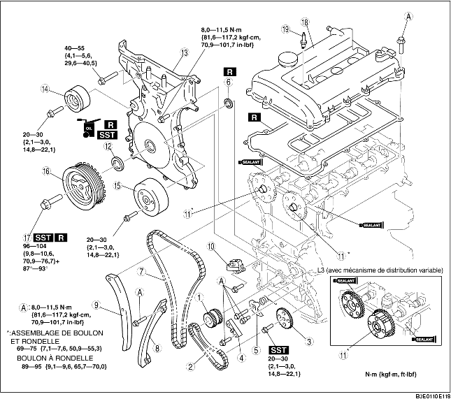

1. Remonter dans l'ordre indiqué par le tableau.

.
|
1
|
Pignon de vilebrequin
|
|
2
|
Chaîne de pompe à huile
|
|
3
|
Pignon de pompe à huile
(voir la section Note sur le remontage de pignon de pompe à huile.)
|
|
4
|
Guide de chaîne de pompe à huile
|
|
5
|
Tendeur de chaîne de pompe à huile
|
|
6
|
Joint (L3 (avec mécanisme de distribution variable))
|
|
7
|
Chaîne de distribution
(voir la section Note sur le remontage de chaîne de distribution.)
|
|
8
|
Guide de chaîne
|
|
9
|
Bras de tendeur
|
|
10
|
Tendeur de chaîne
|
|
11
|
Pignon d'arbre à cames, actionneur de distribution variable (L3 (avec mécanisme de distribution variable))
|
|
12
|
Joint d'huile avant
(voir la section Note sur le remontage de joint d'huile avant.)
|
|
13
|
Carter avant de moteur
(voir la section Note sur le remontage de carter avant de moteur.)
|
|
14
|
Poulie de ralenti de courroie d'entraînement (sans courroie de transmission de climatisation de type allongé)
|
|
15
|
Poulie de pompe à eau
|
|
16
|
Poulie de vilebrequin
|
|
17
|
Boulon de verrouillage de poulie de vilebrequin
(voir la section Note sur le remontage de boulon de verrouillage de poulie de vilebrequin.)
|
|
18
|
Couvercle de culasse
(voir la section Note sur le remontage de couvercle de culasse)
|
|
19
|
Bougie d'allumage
|
1. Maintenir le pignon de pompe à huile à l'aide de l'outil SST.
1. Placer l'outil SST sur l'arbre à cames, puis aligner la position de l'arbre à cames N° 1 avec le PMH.
Europe
Excepté Europe
2. Déposer le bouchon aveugle inférieur du bloc-cylindres.
3. Placer l'outil SST comme indiqué dans l'illustration.
4. Tourner le vilebrequin dans le sens des aiguilles d'une montre, de sorte que le vilebrequin se trouve dans la position PMH du cylindre N° 1.
5. Reposer la chaîne de distribution.
6. Reposer le tendeur de chaîne et retirer le câble de retenue.
1. Maintenir l'arbre à cames à l'aide d'une clé appropriée montée sur la pièce hexagonale en fonte, comme indiqué dans l'illustration.
2. Serrer le boulon de verrouillage du pignon d'arbre à cames.
1. Appliquer de l'huile moteur propre sur le joint d'huile.
2. Légèrement enfoncer à la main le joint d'huile.
3. Comprimer le joint d'huile à l'aide de l'outil SST et d'un marteau.
1. Appliquer un produit d'étanchéité à base de silicone sur le carter avant du moteur, comme indiqué dans l'illustration.
2. Reposer les boulons du couvercle de culasse selon l'ordre indiqué dans l'illustration.
|
Boulon N°
|
Couple de serrage N·m {kgf·m, ft·lbf}
|
|---|---|
|
1-18
|
8,0-11,5 N·m
{81,6-117,2 kgf·cm, 70,9-101,7 in·lbf}
|
|
19-22
|
40-55 {4,1-5,6, 29,7-40,5}
|
1. Placer l'outil SST sur l'arbre à cames, comme indiqué dans l'illustration.
Europe
Excepté Europe
2. Reposer le boulon M6 × 1,0.
3. Tourner le vilebrequin dans le sens des aiguilles d'une montre, de sorte que le vilebrequin se trouve dans la position PMH du cylindre N° 1.
4. Maintenir la poulie du vilebrequin à l'aide de l'outil SST.
5. Serrer le boulon de verrouillage de la poulie de vilebrequin dans l'ordre indiqué, en suivant les deux étapes suivantes, à l'aide de l'outil SST (49 D032 316).
6. Déposer le boulon M6 × 1,0.
7. Déposer l'outil SST de l'arbre à cames.
8. Déposer l'outil SST du bouchon aveugle inférieur du bloc-cylindres.
9. Faire tourner le vilebrequin sur deux tours dans le sens des aiguilles d'une montre jusqu'à la position PMH.
10. Poser le bouchon aveugle inférieur du bloc-cylindres.
1. Appliquer un produit d'étanchéité à base de silicone sur les plans de joint, comme indiqué dans l'illustration.
2. Reposer le couvercle de culasse avec un nouveau joint plat.
3. Serrer les boulons selon l'ordre indiqué dans l'illustration.